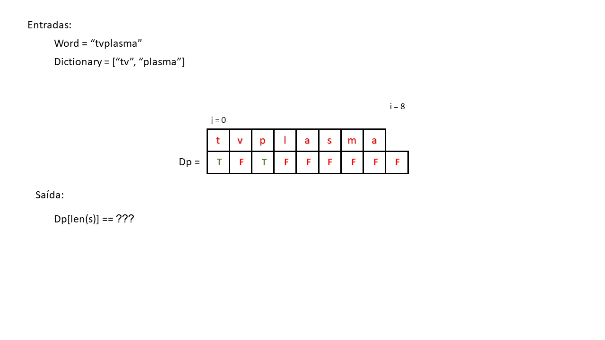
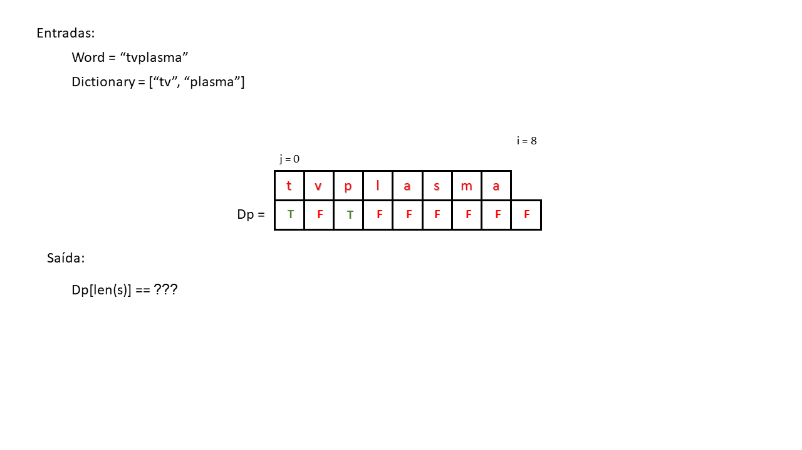
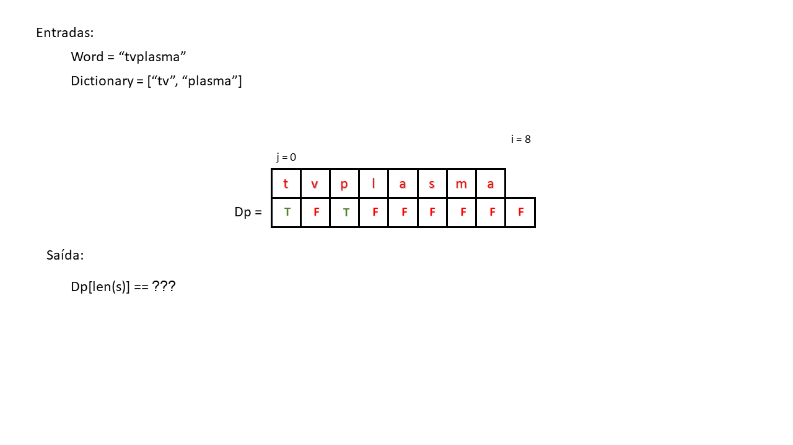

Handout criado por Pedro Andrade, Willian Kenzo e Thiago Kawahara
Algoritmo de Programação Dinâmica para o Problema da Quebra em Palavras
Problema
Qual o problema?
O problema da quebra em palavras consiste em dado um conjunto de palavras sem espaço, descobrir se esse mesmo conjunto de palavras pode ser separado por espaços ou não.
Onde se encontra?
Esse problema se encontra em grandes mecanismos de busca como o Google, Bing, Amazon e em entrevistas de emprego para as grandes empresas de tecnologia, como o Google.
Qual a importância de solucionar esse problema?
Exercício 1
Entre no site da Amazon e busque por “tvplasma”. Depois entre no site das Americanas e faça a mesma busca. Há diferença entre as respostas?
Gabarito
No site da Amazon é devolvido os resultados para “tv plasma”, já no site das Americanas não é encontrado nenhum resultado.
Isso é um problema, visto que se você fosse comprar uma tv de plasma nas Americanas, e escrevesse “tvplasma” na ferramenta de busca, o site não te retornaria nenhum resultado. Dando a entender que as Americanas não vende tvs de plasma (o que não é verdade) e a empresa perderia a venda.
Implementação
O que é dado?
Uma string (conjunto de palavras sem espaço).
Uma lista de palavras existentes (banco de dados).
Aviso
A lista de palavras existentes seria como um dicionário. Não o dicionário que a gente conhece da programação, mas aquele gigante livro cheio de palavras.
O que fazer?
Fazer um algoritmo para descobrir se a string dada pode ser segmentada em espaços ou não.
O que retornar?
Um boolean:
Se a string pode ser segmentada em espaços, retorna True.
Se a string não pode ser segmentada em espaços, retorna False.
Aviso
Por simplicidade iremos retornar apenas um boolean, mas facilmente poderiamos alterar o código para retornar as possíveis segmentações da string em espaço.
“garrafadeagua” retorna True, pois no banco de dados há “garrafa”, “de” e “agua”.
O mesmo para “monitor” e “camisabordada”.
“camisaxadrez” retorna False, pois no banco de dados não há a palavra “xadrez”, apesar de ter “camisa”.
Agora que já sabemos as entradas e as saídas do algoritmo, muito provavelmente você acredita que a implementação da lógica desse código seja muito simples e que apenas percorrer a palavra de entrada e ir segmentando-a até encontrar uma palavra no dicionário seja o suficente, porém não é tão simples assim.
Vamos imaginar que implementamos essa lógica de percorrer a string.
Exercício 3
Para uma entrada de “cozinhandoparameusfilhos” e um dicionário de [cozinha, cozinhando, para, meu, meus, filhos].
Qual será a saída ?
Gabarito
False
A resposta vai ser False, pois com nessa lógica o código irá seguimentar a palavra “cozinha” e não encontrará mais nenhuma palavra coincidente no dicionário.
Por mais que seja possível segmentá-la em “cozinhando para os meus filhos”, do jeito que está implementado o algorítmo ele não verifica se existe outras maneiras de segmentar uma mesma string, dessa forma, parando na palavra “cozinha”.
Vale observar que funcionaria para os exemplos do exercício 2, porém, como foi mostrado, não funciona para todas as entradas, se mostrando ineficiente.
Então como implementamos uma lógica realmente eficiente ?
Para isso iremos utilizar um algoritmo, cuja ideia separaria recursivamente as possíveis palavras em ramos individuais, ou seja, para a string “cozinhandoparameusfilhos” com o dicionário [cozinha, cozinhando, para, meu, meus, filhos] o seu primeiro ramo seria segmentar a palavra “cozinha” e testar, recursivamente, o resto da string “ndoparameusfilhos”.
Em um outro ramo a primeira palavra segmentada não será mais “cozinha”, e sim “cozinhando”, e de novo verificando o resto da string “parameusfilhos” recursivamente, dessa forma, verificando que a string pode ser segmentada em “cozinhando para meus filhos”.
Para que seja mais fácil a sua visualização a ideia dele foi representada nessa árvore de recursão:
Como em pelo menos um dos seus caminhos foi possível segmentar uma frase, com todas as letras da string, o algoritmo irá devolver True pela possível segmentação da string em “cozinhando para os meus filhos”.
Aviso
O código só irar devolver True e não a frase segmentada!
Exercício 4
Para a entrada “felizmentesocorro” e o dicionário [feliz, felizmente, mente, so, socorro, corro], desenhe a sua árvore de recursão.
Dessa vez não houve apenas uma segmentação de frase possível, mas quatro: “feliz mente so corro”, “feliz mente socorro”, “felizmente so corro” e “felizmente socorro”.
Exercício 5
No exercício anterior se prestarmos bem atenção na árvore de recursão notamos um problema que esse algorítmo tem. Você consegue identificar?
Gabarito
O algoritmo faz as mesmas verificações de palavras desnecessáriamente, repetindo ramos da árvore que já foram identificados.
Como pode observar na imagem acima, as palavras “socorro” e “corro” foram verificadas 2 vezes e a string vazia “” foi pior ainda, sendo verificada 4 vezes.
Essas repetições acabam deixando o código mais lento e com uma complexidade maior, pois mais interações serão necessárias para identificar as frases maiores e dicionários maiores.
OBS:
Se vc tivesse percebido isso antes poderia ter copiado e colado todo o ramo a partir do “socorro” para terminar o exercício 4 mais rápido.
Agora que já temos uma ideia do que o código irá fazer e qual algoritmo iremos usar, como o codificamos?
Aviso
Para um melhor entendimento vamos representá-lo na forma escrita e dividí-lo por partes.
Para começar vamos criar uma função que recebe uma string e um dicionário e essa função percorre a string inteira verificando se alguma combinação existe no dicionário.
1 funcao word_break(string, dicionario):
2
3 para cada posição da letra da string:
4 caso string[0:posição] esteja no dicionario:
5 continua
Exercício 6
Agora que já conseguimos pegar partes da string original e identificar se essa parte é uma palavra válida, só resta checar o resto da string. Você consegue pensar em como faríamos isso?
Gabarito
Por recursão!
Como já foi explicado nos exercícios anteriores toda vez que indentificamos uma segmentação de palavra válida verificamos o resto da string de forma recursiva.
1 funcao word_break(string, dicionario):
2 se string estiver vazia devolve true # Condição para retirar a recursão do "Loop infinito"
3
4 para cada posição da letra da string:
5 caso string[0:posição] esteja no dicionario:
6
7 caso word_break(string[posição:], dicionario): # Verifica se o resto da string é segmentada de forma recursiva
9 devolve true
10
11 devolve false
Adicionamos a chamada recursiva dentro da primeira condição a qual já foi implementada antes, porém iremos mandar o resto da string que não foi verificada se existe no banco de dados ou não, e dentro dessa condição iremos devolver True, ou seja, a string pode ser repartida e caso o loop acabe será devolvido False, dessa forma declarando que a string não pode ser repartida.
OBS:
Lembrando que estamos trabalhando com uma função recursiva, portanto temos que adicionar uma condição de parada que no caso é quando a string for vazia, que irá sempre devolver True, pois toda string vazia pode ser segmentada.
Exercício 7
Agora que já temos praticamente a ideia e o código entendidos.
Com a string de entrada “tvplasma” e o dicionário ["tv, “plasma”]. Você consegue explicar como esse algoritmo verifica se a string realmente consegue ser repartida ou não?
Gabarito
Quando o código entrar na primeira condição, ou seja quando ele afirmar que “tv” é uma palavra que exista no banco de dados, o resto da string, ou seja, “plasma”, que vem logo após “tv”, será enviado para a recursão da função verificando que “plasma” também existe no banco de dados devolvendo True.
Exercício 8
Imagine agora que as entradas das funções vão ser “garrafadeagua” e o dicionário seja [“garrafa”, “agua”] qual seria a saída? Haveria alguma recursão?
Gabarito
1 False
Você poderia pensar que a string pode sim ser seguimentada em “garrafa de agua” e de fato você tem toda a razão, porém o banco de dados fornecido ao algoritmo não possui a palavra “de”, dessa forma ela não consegue seguimentá-la, entretanto a função acaba encontrando uma palavra: “garrafa”, fazendo uma recursão.
Logo em seguida iremos por o código implementado no python para uma melhor compreensão.
1 def word_break(string, dicionario):
2 tamanho = len(string)
2 if tamanho == 0:
3 return True
4
5 for i in range(1, tamanho+1):
6 if string[0: i] in dicionario and word_break(string[i: tamanho], dicionario):
7 return True
8
9 return False
Exercício 9
Você saberia dizer qual é a complexidade do algoritmo de recursão?
Gabarito
Como foi explicado no exercício 5, esse algoritmo tem um terrível problema, que é a sua repetição desnecessária na verificação de algumas palavras, por causa disso, a sua complexidade é bem ruim e quanto maior as suas entradas mais elevado fica a sua complexidade, dessa forma tendo uma complexidade de \(O(2^n)\).
Programação Dinâmica
O que é?
É um método de otimização de algoritmos que é uma espécie de um algoritmo de recursão com o apoio de uma tabela. Ou seja, a programação dinâmica, guarda os resultados dos subproblemas encontrados durante a recursão, para não ser preciso calcular novamente, dessa forma, sendo uma solução do problema do algoritmo anterior.
Aviso
Essa técnica de salvar uma ação anterior, ou seja, ter uma espécie de “memória” interna é conhecida como memoização.
Como isso se aplica ao nosso problema?
O problema do algoritmo recursivo é a sua complexidade. Podemos suavizá-la implementando a programação dinâmica, já que, por salvar os resultados dos subproblemas, ele não precisa calcular novamente, o que acaba tornando-o mais rápido.
Agora para entendermos melhor a lógica da programação dinâmica, realizaremos ela passo a passo no código.
Exercício 10
A programação dinâmica, como já foi dito antes, necessita de um cache, uma memória, para guardar acontecimentos passados e assim utilizar esse conhecimento futuramente. Como vc pensaria em implementar essa mecânica?
Gabarito
Poderia ser feito com uma lista, que guardaria a posição inicial e final de uma palavra válida!
Para começar ela seria inicializada com todos os seus elementos como False, menos o seu primeiro valor, pois ele marcaria o início da primeira palavra, sendo inicializado como True.
Como ela precisa marcar o INÍCIO e o FIM de uma palavra válida ela precisa ter o tamaho da string + 1.
1 funcao word_break(string, dicionario):
2 cria uma lista dp do tamanho da string + 1 preenchida com false menos o primeiro elemento
3 # O primeiro elemento de dp é true pois uma string vazia sempre pode ser segmentada.
Outra vantagem da programação dinâmica é que sua implementação não precisa, necessariamente, de uma lógica recursiva, à qual deixa o código mais complexo.
Exercício 11
Na forma recursiva usamos esse próprio recurso (ser recursiva) para separar as palavras válidas do resto da string que ainda seria verificada. Entretanto, como não iremos mais usar esse recurso você conseguiria pensar em como vamos fazer essas divisões?
OBS:
Por agora não precisa se preocupar em utilizar a memória criada no exercício anterior.
Gabarito
1 funcao word_break(string, dicionario):
2 cria uma lista dp do tamanho da string + 1 preenchida com false menos o primeiro elemento
3 # O primeiro elemento de dp é true pois uma string vazia sempre pode ser segmentada.
4
5 para todo i no tamanho da string + 1:
6 para todo j em i:
7 se string[j:i] pertece ao dicionario:
8 continua
A melhor maneira de separarmos cada palavra é com dois loop um dentro do outro, pode até vir a mente que ter dois loops será mais complexo que ter apenas um loop, porém entre ter dois loops ou uma lógica de recursão, nesse caso, sai mais vantajoso a primeira opção.
Adicionaremos um loop interno que irá perorrer cada substring em relação ao i do loop externo checando se a substring formada que comece em j e vai até i pertence ao dicionário ou não.
Como pode ser visto no exercício anterior, o algoritmo já está conseguindo quebrar a string e verificar se existe ou não no dicionário, porém ele ainda não consegue identificar se a string realmente pode ser seguimentada ou não.
Para que ele consiga fazer essa proeza finalmente vamos utilizar a lista inicializada anteriormente.
Exercício 12
Tente implementar uma lógica que utiliza a lista que criamos antes, para verificar se a string pode ou não ser segmentada.
OBS:
Lembre que essa lista guarda a posição inicial e final de cada palavra válida.
Gabarito
1 funcao word_break(string, dicionario):
2 cria uma lista dp do tamanho da string + 1 preenchida com false menos o primeiro elemento
3 # O primeiro elemento de dp é true pois uma string vazia sempre pode ser segmentada.
4
5 para todo i no tamanho da string + 1:
6 para todo j em i:
7 se dp[j] e string[j:i] pertece ao dicionario:
8 dp[i] recebe true
9 quebra o loop interno
10
11 devolve o último elemento da lista dp
Primeiro vamos por uma condição adjunto com o outro, que só irá entrar nessa condição caso o valor da lista dp na posição j (do loop interno) for True, caso ele consiga ter as duas condições realizadas, vamos por verdadeiro na lista a condição True na posição i e depois do loop iremos devolver o último elemento da lista.
Nós fazemos todas essas condições pois na lista dp ela irá marcar como True o início e o fim de uma palavra válida então caso a string consiga ser segmentada ela sempre irá apresentar True no último elemento, pois será a marcação do fim da última string encontrada e caso não encontre tal palavra o último elemento será False.
É por incrível que pareça é apenas isso, o algoritmo de programação dinâmica foi totalmente implementado!!
Segue o código em python para que seja mais fácil a sua compreensão.
def wordBreak(string, dictionary):
# create a dp table to store results of subproblems
# value of dp[i] will be true if string string can be segmented
# into dictionary words from 0 to i.
dp = [False for i in range(len(string) + 1)]
# dp[0] is true because an empty string can always be segmented.
dp[0] = True
for i in range(len(string) + 1):
for j in range(i):
if dp[j] and string[j:i] in dictionary:
dp[i] = True
break
return dp[len(string)]
A seguir temos uma breve animação do algoritmo para um melhor entendimento.

Exercício 13
Você saberia dizer qual é a complexidade do algoritmo de programação dinâmica?
Gabarito
Como foi dito antes a programação dinâmica resolveu um grande problema que o código da recursão tinha, a verificação de palavras iguais, por causa disso a sua complexidade diminuiu consideravelmente sendo de \(O(n^2)\) caso n > s ou \(O(n^2)\) caso s > n, onde s é o tamanho da maior palavra no dicionário e n é o tamanho da string recebida na função.


 
